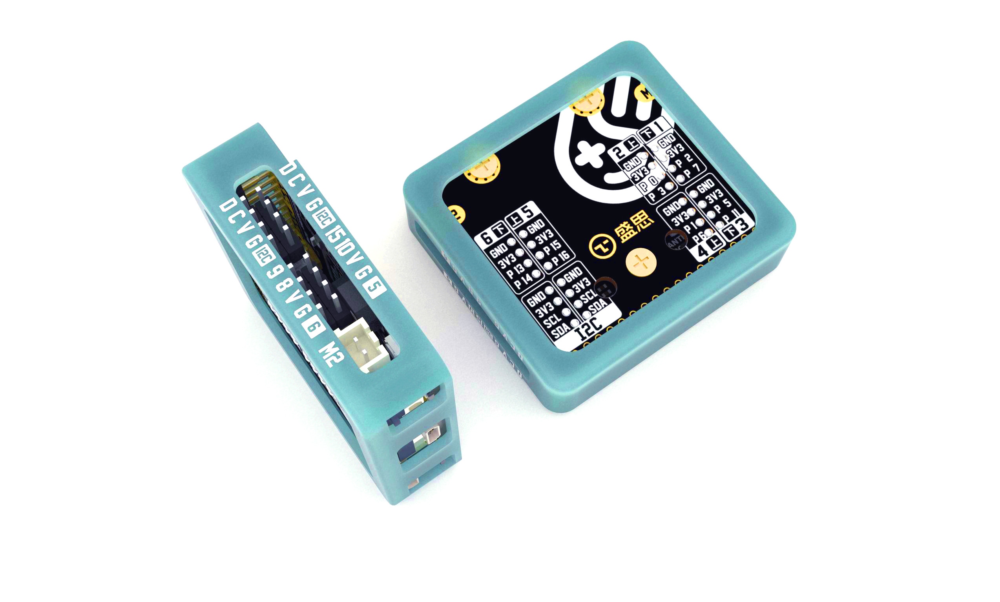

parrot — 掌控拓展板驱动
{kind=link}

掌控拓展板parrot是mPython掌控板衍生的一款体积小巧、易于携带。支持电机驱动、语音播放、语音合成等功能的IO引脚扩展板,可扩展12路IO接口和2路I2C接口。 该库为掌控拓展板提供电机驱动,LED驱动等功能。
电机控制I2C通讯协议数据格式:
Type |
Command |
motor_no |
speed(int) |
控制电机 |
0x01 |
0x01/0x02 |
-100~100 |
当 ‘speed’ 为负值,反转；当为正值,正转。
电机驱动示例
1import parrot
2from mpython import sleep_ms,sleep
3
4# 可设置速度范围为-100到100。
5# 当值为正值时,电机正转；为负值时,电机反转；
6
7
8while True:
9
10 # 设置正转速度100
11 parrot.set_speed(parrot.MOTOR_1,100)
12 parrot.set_speed(parrot.MOTOR_2,100)
13 print("current motor speend: %d,%d" %(parrot.get_speed(parrot.MOTOR_1),parrot.get_speed(parrot.MOTOR_2))) #获取电机速度
14 sleep(5)
15 # 设置反转速度100
16 parrot.set_speed(parrot.MOTOR_1,-100)
17 parrot.set_speed(parrot.MOTOR_2,-100)
18 print("current motor speend: %d,%d" %(parrot.get_speed(parrot.MOTOR_1),parrot.get_speed(parrot.MOTOR_2))) #获取电机速度
19 sleep(5)
20 # 停止
21 parrot.set_speed(parrot.MOTOR_1,0)
22 parrot.set_speed(parrot.MOTOR_2,0)
23 print("current motor speend: %d,%d" %(parrot.get_speed(parrot.MOTOR_1),parrot.get_speed(parrot.MOTOR_2))) #获取电机速度
24 sleep(2)
NEC编码红外发码示例
1import parrot
2import time
3
4ir_code = parrot.IR_encode()
5
6ir = parrot.IR()
7ir_buff = ir_code.encode_nec(1, 85)
8while True:
9 ir.send(ir_buff, 1)
10 time.sleep(3)
11 ir.stop_send()
12 time.sleep(3)
NEC编码红外学习示例
1from mpython import *
2import parrot
3import time
4
5def on_button_a_pressed(_):
6 global data
7 ir.learn()
8 time.sleep(4)
9 if 0 == ir.__get_learn_status():
10 data = ir.get_learn_data()
11 print(data)
12 else:
13 print('什么都没学到...')
14
15button_a.event_pressed = on_button_a_pressed
16
17def on_button_b_pressed(_):
18 global data
19 print(data)
20 ir.send(data, 0)
21
22button_b.event_pressed = on_button_b_pressed
23
24ir = parrot.IR()
25data = None